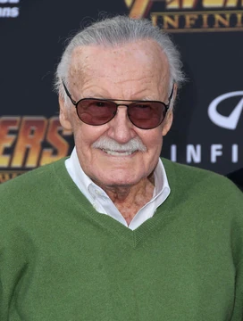

El padre del Universo Marvel
Stan Lee
Stanley Martin Lieber (1922-2018) llegó a la editorial que luego sería Marvel siendo un adolescente y terminó convirtiéndola en lo que es hoy. Junto a dibujantes como Jack Kirby y Steve Ditko creó héroes con problemas reales: dudas, facturas y errores. Cerraba sus columnas con una palabra: ¡Excelsior!
